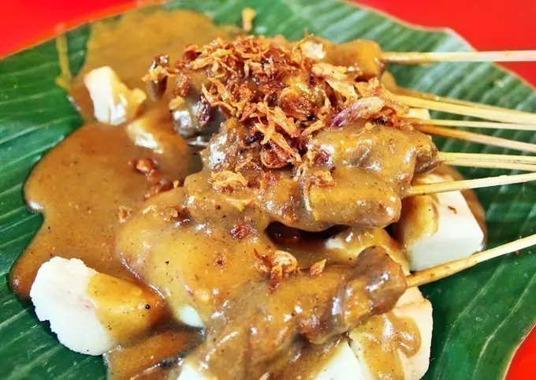

Satay Padang Recipe

Description
There are many different kinds of sate/satay from different regions in Indonesia alone. One of my favorites is Sate Padang, from, needless to say, Padang (West Sumatra). Sate Padang is typically sold as street food in push cart in Indonesia. I especially love the thick sauce of sate padang. It’s almost curry-like I must say. According to wikipidia though, there are 3 different kinds of sate padang: Sate Pariangan (which I’ve never tasted before), Sate Padang Panjang (I’ve never tasted this too), and then Sate Padang (my favorite). They come from the same region but with different taste and color in the sauce. Honestly, I’ve only tasted Sate Padang, which they say is sort of the combination of both Sate Pariangan and Sate Padang Panjang.
How to make the best satay padang at home
- Bring 1.5 liter of water to a boil and then add the tongue (I used beef in this step-by-step because the tongue wasn’t available at the time) and boil for 15 minutes under medium heat.
- Save the cooking liquid
- Remove the tongue/beef and let it rest for 10 minutes on a cutting board
- Cut the tongue/beef into about 2 x 2 cm and about 1 cm thick. Don’t cut too small or they will fall apart during cooking
- Put all ingredients for ground spices in a food processor and blend into a paste
- Preheat a heavy-bottom pot. Put 3 Tbsp of oil and saute the ground spices until fragrant, about 3-4 minutes
- Add all ingredients under “other spices” in and continue to saute for another 5 minutes
- Add the parboiled tongue and saute for another minute. Add the liquid from boiling the meat. Bring back to a boil and then lower the heat to medium and cover to let the tongue simmer for about 30 minutes or until tender but not falling apart
- Leave the tongue/beef soaked in the broth for a minimum of 4 hours or overnight in the fridge if you can. This will add more flavor to the tongue
- Then remove the tongue/beef from the broth and discard all the spices and herbs. If you put in the fridge you can heat it back up a little bit just to melt the fat that has solidified, then discard the spices, herbs and remove the tongue. Strain the broth and let it cool down before we thicken it. Have a taste and season the broth with salt to your taste.
- Thread tongue pieces onto the bamboo skewers, about 3-4 pieces for each skewer. Get your grill ready and brush the sate with some oil on both sides and grill until they are slightly browned but not too long so the meat won’t toughen and dried up too much. The tongues are cooked, we just want to brown them a bit. You can also preheat a large non-stick pan on the stove and put the sate on the pan and grill until slightly charred on both sides. Basting with some oil as needed. In Indonesia, most people like to use margarine to do this, but I think oil is good enough
- Mix the rice flour with 2-3 large ladles of broth and stir to combine and make sure there are no lumps. Make sure the broth is not hot at this point.
- Pour half of the rice flour mixture back into the pot and stir to combine. Turn on the heat over medium-low and keep stirring. The broth will start to thicken and don’t stop stirring. It will curdle if you stop stirring. Check to see if you are happy with the consistency. Keep in mind that it will thicken further as it cools down. If you want it thicker, stir more of the rice flour mixture (remember to stir the rice flour mixture before pouring in as the flour and liquid may have separate)
- Put some sate and lontong/ketupat on a plate and then ladle the hot thickened sauce over, garnish with bawang goreng and serve immediately. In Medan, we love to serve this with fried beef skin. I served it with chicharron because that is what available here
This recipe is referred from this website
Go to Home Page